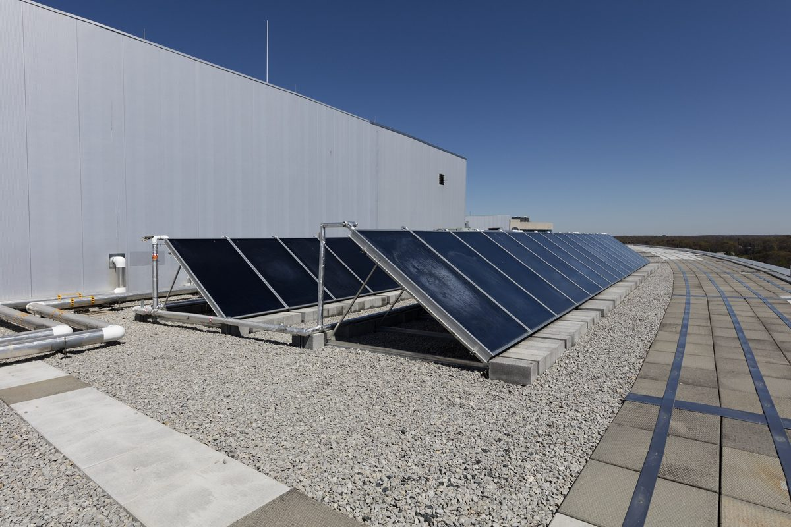

미국 메릴랜드 하워드 카운티장, 태양광 사업 문턱 높인 의회 조례에 거부권…"에너지 자립·요금 부담 해칠 것"

처음엔 태양광 신규 사업 일시 중단안으로 출발, 농지보전위원회 승인 권한 키운 수정안으로 통과됐으나 되돌아가
미국 메릴랜드주 하워드 카운티의 캘빈 볼 카운티장이 상업용 태양광 사업의 승인 절차를 까다롭게 만든 카운티 의회 조례(CB59-2026)에 거부권을 행사했다. 이 조례는 처음에 카운티 안 태양광 사업을 일시 중단하는 안으로 발의됐다가, 농지보전위원회의 사업 승인 역할을 키우고 공청 절차 기간을 줄이는 내용으로 고쳐져 지난주 임기 마지막 회기에서 통과됐다. 볼 카운티장은 카운티에 이미 필요한 규제 수단이 있어 새 요건은 불필요하다고 밝히고, 태양광 사업이 카운티와 주, 나라 전체에서 어려운 시기에 개발을 늦추거나 막을 수 있다고 지적했다. 그는 에너지 비용이 치솟아 주민과 사업체가 부담을 겪는 상황에서 이 조례가 에너지 자립과 요금 부담 완화를 크게 해치고 지역의 기후 대응도 후퇴시킬 것이라고 했다. 카운티 헌장에 따라 거부된 조례는 재심의를 위해 의회로 돌아가며, 볼 카운티장은 같은 날 비영리단체 보조금 감사를 강화하는 다른 조례(CB58-2026)에도 거부권을 행사했다.
시민에너지 관점
농지를 지키자는 요구와 태양광을 늘리자는 요구가 부딪힐 때, 사업을 아예 멈추거나 승인 단계를 덧붙이는 방식은 결국 전기요금 부담을 주민에게 떠넘긴다는 것을 이번 거부권 사유가 보여 준다. 농지 훼손 걱정은 영농형 태양광처럼 농사와 발전을 함께 하는 방식과 명확한 입지 기준으로 풀 수 있고, 절차를 늘리는 것만으로는 해결되지 않는다. 무엇보다 발전소의 주인이 외지 자본이 아니라 그 지역 농민과 주민이면 반대는 줄고 수익은 지역에 남는다. 우리 지자체들도 이격거리·심의 강화로 막기보다 주민 소유와 이익공유를 조건으로 길을 열어 주는 조례로 바꿔야 한다.
출처: CBS News Baltimore 2026-11-06 Renee Anderson 원문 보기
米メリーランド州ハワード郡長、太陽光事業のハードルを上げる議会条例に拒否権…「エネルギー自立と料金負担の軽減を損なう」
当初は太陽光の新規事業を一時停止する案として出発、農地保全委員会の承認権限を強めた修正案で可決されたが差し戻し
米メリーランド州ハワード郡のカルビン・ボール郡長が、商業用太陽光事業の承認手続きを厳しくする郡議会の条例(CB59-2026)に拒否権を行使した。この条例は当初、郡内の太陽光事業を一時停止する案として提出されたが、農地保全委員会の事業承認での役割を強め、公聴手続きの期間を短縮する内容に修正され、先週、任期最後の会期で可決された。ボール郡長は、郡にはすでに必要な規制手段があり新たな要件は不要だと述べ、太陽光事業が郡や州、国全体で厳しい時期にある中で開発を遅らせたり阻んだりしかねないと指摘した。さらに、エネルギー費用が急騰し住民や事業者が負担を抱える状況で、この条例はエネルギー自立と料金負担の軽減を大きく損ない、地域の気候対策も後退させると述べた。郡憲章により拒否された条例は再審議のため議会に戻され、ボール郡長は同日、非営利団体への補助金の監査を強化する別の条例(CB58-2026)にも拒否権を行使した。
市民エネルギーの視点
農地を守ろうという要求と太陽光を増やそうという要求がぶつかるとき、事業を止めたり承認段階を加えたりするやり方は、結局電気料金の負担を住民に押し付けることになると、今回の拒否権の理由は示している。農地の損失への懸念は、営農型太陽光のように農業と発電を両立させる方式や明確な立地基準で解決でき、手続きを増やすだけでは解決しない。何より発電所の持ち主が外部資本ではなくその地域の農家や住民であれば、反対は減り、収益は地域に残る。韓国の自治体も離隔距離や審議の強化で阻むより、住民所有と利益共有を条件に道を開く条例へと改めるべきだ。
出典: CBS News Baltimore 2026-11-06 Renee Anderson 原文を読む
美国马里兰州霍华德县长否决提高太阳能项目门槛的议会条例，称将损害能源自主并加重电费负担
条例最初以暂停新建太阳能项目的方案提出，后改为扩大农地保护委员会审批权限后通过，如今被退回
美国马里兰州霍华德县县长卡尔文·鲍尔否决了县议会一项收紧商业太阳能项目审批程序的条例(CB59-2026)。该条例最初以暂停县内太阳能项目的方案提出，后经修改，扩大了农地保护委员会在项目审批中的作用，并缩短了公开听证程序的期限，于上周本届议会任期最后一次会议上通过。鲍尔表示，县里已有必要的监管手段，新增要求并无必要，并指出在太阳能项目于县、州乃至全国都处于艰难时期之际，该条例可能拖延甚至阻挡开发。他还表示，在能源成本飙升、居民和企业负担加重的情况下，这项条例将严重损害能源自主和电费负担的缓解，并使地方气候行动倒退。根据县宪章，被否决的条例将退回议会重新审议；鲍尔当天还否决了另一项加强非营利组织补助审计的条例(CB58-2026)。
市民能源视角
这次否决的理由表明，当保护农地的要求与扩大太阳能的要求发生冲突时，叫停项目或增加审批环节的做法，最终会把电费负担转嫁给居民。对农地受损的担忧，可以通过农光互补这类兼顾耕种和发电的方式以及明确的选址标准来解决，单靠增加程序无法解决问题。更重要的是，如果电站的主人不是外来资本，而是当地农民和居民，反对就会减少，收益也会留在本地。韩国的地方自治团体也应改变以加大间隔距离、强化审议来设限的做法，改为以居民所有和利益共享为条件、为项目开路的条例。
来源: CBS News Baltimore 2026-11-06 Renee Anderson 查看原文
Howard County, Maryland Executive Vetoes Council Bill Raising Hurdles for Solar Projects, Citing Energy Independence and Affordability
The bill began as a moratorium on new solar projects and passed in amended form giving the Agricultural Preservation Board a bigger approval role; it now goes back to the council
Howard County Executive Calvin Ball in Maryland has vetoed a county council bill, CB59-2026, that would have tightened the approval process for commercial solar projects. The bill was introduced as a moratorium on solar projects in the county but was amended to expand the Agricultural Preservation Board's role in approving projects and to shorten public meeting timeframes before it passed last week at the council's final session of its term. Ball said the county already has the regulatory tools the bill claimed were missing, making the new requirements unnecessary, and warned that it could delay or block development at a difficult time for solar projects in the county, the state and the nation. He said that with energy costs soaring for residents and businesses, the bill would seriously undermine energy independence and affordability and set back local climate progress. Under the county charter the vetoed bill returns to the council for reconsideration, and on the same day Ball also vetoed a separate bill, CB58-2026, that would have tightened audits of grants to nonprofit organizations.
Citizen Energy View
The reasons behind this veto show that when the push to protect farmland collides with the push to expand solar, halting projects or adding approval layers ultimately shifts the burden of higher power bills onto residents. Concerns about losing farmland can be addressed through agrivoltaics, which combines farming and generation, and through clear siting standards, not simply by adding procedures. Above all, when a power plant is owned by local farmers and residents rather than outside capital, opposition falls and the income stays in the community. Korean local governments, too, should move away from blocking projects with setback distances and stricter reviews and instead adopt ordinances that open the way on the condition of local ownership and benefit sharing.
Source: CBS News Baltimore 2026-11-06 Renee Anderson Read the original